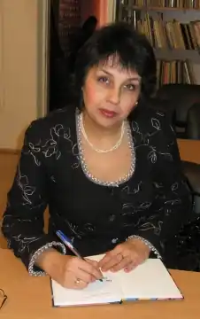

Еліна Іванівна Заржицька (народилася у Дніпропетровську) — письменниця, журналістка, громадська діячка, член НСПУ і НСЖУ.
Здобула освіту в Національному гірничому університеті, Дніпропетровському обласному інституті патентознавства.
Член журі Міжнародного фестивалю дитячого мистецтва "Чарівна книжка", Всеукраїнської літературної премії ім. Олександри Кравченко (Девіль), Всеукраїнського конкурсу творчої молоді "Літературна надія Дніпра 2013", обласного літературного конкурсу "Молода муза". Керівник секції літератури для дітей та юнацтва "Джерело" при ДОО Національної спілки письменників України. Член Національної спілки журналістів України. Автор і керівник проекту "Аудіокнига "Письменники Дніпропетровщини – шкільним бібліотекам" (2012) разом із Наталією Дев’ятко і Фіделем Сухоносом. Редактор-упорядник електронної книги – збірника творів дніпропетровських письменників – екологічної читанки для дітей "Наш кращий друг – природа" (2013). Переможець міжрегіонального конкурсу "Письменники-малюкам" (1997, Одеса), нагороджена особливою відзнакою Журі Третього Всеукраїнського конкурсу сучасної радіоп’єси "Відродимо забутий жанр" (2010, Київ). Лауреат Дніпропетровського міського конкурсу-фестивалю молодіжних та дитячих театрів "Новорічна феєрія" (2009, як автор лібрето "Пригоди Морського Коника"). Лауреат літературної премії ім. Олеся Гончара Всеукраїнського щомісячника "Бористен" (2010, Дніпропетровськ). Дипломант Всеукраїнського конкурсу "Коронація слова" за роман для дітей "Китеня Тимко і Капітан Теревенько" (2011, Київ), міського конкурсу "Сузір’я муз Дніпропетровська" у номінації "Кращий мистецький твір для дітей" (2012, Дніпропетровськ). Призер Міжнародного конкурсу оповідань від журналу "Склянка Часу*Zeitglas" (2012, Канів), переможець Всеукраїнського конкурсу "Люби ближнього свого – як самого себе" відеопроекту "З любов’ю до дітей" (2012). За її лібрето композитор, Відмінник культури України, член Асоціації композиторів НВМС Валентина Фалькова написала і здійснила постановки музичних спектаклів "Як тітонька Жабка на ринок ходила" та "Пригоди Морського Коника" для авторського дитячого музичного театру "Надежда" при ДДМШ №3 і Будинку вчених м. Дніпропетровська (2007, 2009). Дипломант регіонального конкурсу "Композитори – дітям і юнацтву" (2007, її вірш "Ми збираємо гриби" покладено на музику членом Асоціації композиторів Дніпропетровського відділення Національної Всеукраїнської музичної спілки Оленою Швець-Васіною). Пише українською і російською мовами. Жанри – казки, пригодницькі та історичні повісті для дітей молодшого, шкільного молодшого та шкільного середнього віку. Твори опубліковані в журналах "Бористен" (Дніпропетровськ), "Дядя Федор и другие" (Дніпропетровськ), "Свічадо" (Дніпропетровськ), "Саксагань" (Кривий Ріг), "Склянка Часу*Zeitglas" (Канів), "Жирафа Рафа" (Київ), "Всесвітня література в сучасній школі" (Київ). Співавтор збірника "Книжкова веселка: Дитячі письменники рідного краю" (2009, Дніпропетровськ), книг "Сяєво жар-птиці: Антологія літератури для дітей та юнацтва Придніпров'я" (2009, 2012, Дніпропетровськ), альманахів "З душі та серця" (2011, Дніпропетровськ), "Скіфія-2012-Літо" (2012, Канів), "Скіфія-2012-Осінь" (2012, Канів), "Скіфія-2012-Зима" (2012, Канів), "Форум" (2012, Дніпропетровськ), "Антологія сучасної новелістики та лірики України" (Канів, 2013). Співавтор аудіокниги "Письменники Дніпропетровщини – шкільним бібліотекам" (2012, Дніпропетровськ) та екологічної читанки "Наш кращий друг – природа" (2013, Дніпропетровськ). Автор книг "Приключения розового динозаврика и его друзей" (2001, Дніпропетровськ), "Три сходинки голодомору" (2009, Дніпропетровськ), "Як черепаха Наталка до школи збиралася" (2011, Дніпропетровськ). За мотивами казки Еліни Заржицької "Як черепаха Наталка до школи збиралася" створено мультфільм (у 4-х серіях).